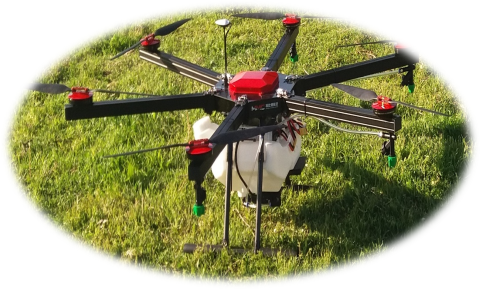
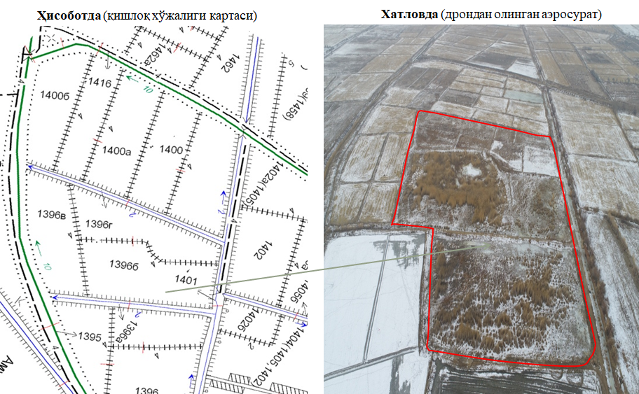

Мавзу: Phantom 4 Pro дрон ёрдамида съёмка ишларини бажариш
Ўзбекистон Республикаси Вазирлар Маҳкамасининг 2017 йил 14 мартдаги 258-Ф-сонли “Қишлоқ
хўжалиги экинларини маниторинг қилиш, худудни картографиялашда техник ва технологик ишлаб
чиқишни ривожлантириш ва янгилашни амалга ошириш тўғрисида”ги Фармойишига асосланган ҳолда,
Ўзбекистон ҳудудида ривожланган мамлакатларда ишлаб чиқарилган замонавий учувчисиз учиш
қурилмаларидан фойдаланиш тарғиб этилмоқда
Учувчисиз учиш аппаратлари (УУА) - умумий ҳолда двигател билан жиҳозланган, тизимли
тарзда
учириш, ҳамда, автоматик тарзда қайтиб келиш имкониятига эга. Қаноти (УУҚ самалёт ва
верталёт тури) билан куч яратиш ва парвоз давомийлигига эга аэродинамик тамойил ёрдамида
махсус вазифаларни бажариш учун яратилган.
Ptero J1
Phantom 4 Pro
A 6 Plus

MCA 6 Spray Drone
УЧУВЧИСИЗ УЧИШ АППАРАТЛАРИ ТИЗИМИ (УУА)
Қишлоқ хўжалигида учувчисиз учиш аппаратларининг бажарадиган вазифалари:
Ерларни жойида кўриб чиқиш ва йўриқномадан ўтказиш;
Мелоратив қурилиш ҳолатини кузатиш;
Ерлар тизимига аниқлик киритишдаги вегетатив ҳолати индексини яратиш;
Ердан фойдаланишда агротехника тадбирларини қонун талаб даражасида олиб бориш.
Ўзбекистон Республикаси Вазирлар Махкамасининг топшириғига асосан 2018 йил хосили учун
бошоқли дон экинларнинг ҳолатини жойларда маниторинг қилиш мақсадида “Ўздавергеодезкадастр”
қўмитаси тамонидан учувчисиз учиш аппаратларидан масофадан туриб суратга олиш ишлари амалга
оширилди.
Суратга олиш натижалари бўйича ҳар бир фермер хўжалиги ва дала контурлари кесимида жами
ғалла экилган майдонларни кузатиш натижасида:
униб чиқмаган;
сийрак униб чиққан;
ғалла ривожланишдан ортда қолган;
бегона ўт босган;
ғўзапойадан тозаланмаган;
кўллатиб суғорилган майдонлар бирма- бир аниқлаб чиқилди.
УЧУВЧИСИЗ УЧИШ АППАРАТЛАРИДАН МАСОФАДАН ТУРИБ СУРАТГА ОЛИШ
2018 йил17-март куни Қашқадарё вилояти Чироқчи тумани Пахтакор худуди учувчисиз учиш
аппаратлари ёрдамида суратга олинди.
Худудда жами ғалла экилган 487 гектардан 83.5 гектари:
60.3 гектари ривождан оркада қолганлиги;
23.2 гектари сийрак униб чиққани;
Шунингдек, худудда 230 гектар майдон шудгорлаб қўйилганлиги аниқланди.
2017 йил наябр ва декабр ойларида Қорақалпоғистон Республикаси ерларини ҳолатини
жойларда маниторинг қилишда учувчисиз учиш аппаратларидан масофадан туриб суратга олиш
ишлари амалга оширилди.
Тахтакўпир тумани Дауқара массивидаги Айбек Тахта ф/х сувли экин ерлари 1344, 1345-1334-
дала контури
Ҳисоботда (қишлоқ хўжалиги картаси)
Хатловда (дрондан олинган аэросурат)
Тахтакўпир тумани Дауқара массивининг захирадаги сувли экин ерлари 1459-1458- дала контури
Тахтакўпир тумани Дауқара массивининг захирадаги сувли экин ерлари 1645- дала контури
Нукус тумани Ақманғит массивидаги Бахадыр Мияссар ф/х сувли экин ерлари 2597, 2597а, 2597б -
дала контурлари
Тахиатош тумани Найман массивидаги Тахиатош ИЭС қишлоқ хўжалиги ерлари 509, 510, 511, 512 -
дала контури
Хужайли тумани Амударё массивидаги Офарин Хужайли ф/х сувли экин ерлари 1396, 1396б -дала
контури

Ушбу олинган маълумотлар асосида аниқланган камчиликларни бартараф этиш юзасидан ишчи гурух
билан биргаликда хар бир худуд кесимида камчиликларни бартараф етиш бўйича чора тадбирлар
ишлаб чиқилди.
УЧУВЧИСИЗ УЧИШ АППАРАТЛАРИ ҚИШЛОҚ ХЎЖАЛИГИДА ҚЎЛЛАНИШИ НАТИЖАСИДА ЭРИШИЛАДИГАН НАТИЖАЛАР;
далани электрон картасини автоматик тарзда аэросуратга олиш орқали яратиш;
маълумотларга автоматик тарзда қайта ишлов бериш;
қишлоқ хўжалик экинларини хатловдан ўтказиш;
бажарилган ишлар хажмини баҳолаш ва уларни бажарилишини назорат қилиш;
экинларни ҳолатини опператив мониторинг қилиш;
қишлоқ хўжалик екинларини хосилдорлигини назорат қилиш;
қишлоқ хўжалик ерларини экологик маниторингини олиб бориш;
қишлоқ хўжалик екинларини униб чиқишини назорат қилиш;
ерни ҳайдаш сифатини текшириш;
экранда кўриб турган холда тахлил қилиш имкониятини беради.